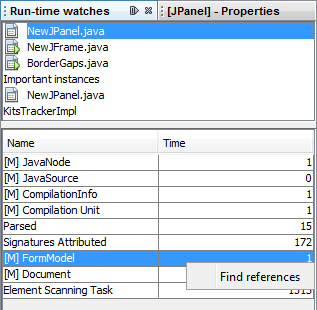

Apache NetBeans
Apache NetBeansFitnessViaTimersCounter
Note: These pages are being reviewed.
Timers/Counters
Timers/counters (a.k.a Runtime watches) is a plugin that defined a convention based on structured logging for communicating some performance metrics. It depends on probes spread over the code of interest, but the probes themselves don’t depend on the plugin.
How to ensure acceptable performance?
First, the code needs to have probes coded in, so it reports times taken for interesting parts of processing. Then users can see reported times in the runtime watches window as soon as each measured action finishes (if they have the plugin installed). The probes can also be used from inside a test by registering a special handler for the TIMER logger and using it for collecting the times. Such a test would heavily depend on the configuration and the load of the testing machine, though, so it is not recommended except for properly controlled environment (automated daily tests).
How to fight against memory leaks?
Again, proper object reference probes needs to be in place first so users can potentially see the accumulating objects in the runtime watches window. Then the NbTestCase can be extended to intercept object reference logging messages and collect weak references to the reported objects. At the end of each test, the assertGC can be called for each reference to verify the objects were freed correctly. Of course not every test would want this functionality, so each test would need to indicate this need and maybe somehow provide a filter of objects to consider (e.g. not tracking Projects, only Documents).
Probes
There are two kinds of probes supported currently, but more kinds can be defined, if necessary. Each probe reports some information keyed by (usually) two keys that form a hierarchy. The primary key is usually a FileObject (but can be any type), while the second is always a String message.
The probe kinds are:
- integer value (count, time)
-
allows a number (time to perform an operation, number of objects processed during the operation) to be reported with a message and a key. The typical use case would be:
long time = System.currentTimeMillis();
int count = parseEverything();
time = System.currentTimeMillis() - time;
Logger timer = Logger.getLogger("TIMER");
timer.log(Level.FINE, "Parsed objects",new Object[] {myFileObject, count});
timer.log(Level.FINE, "Parsed in [[Ms | ms]]",new Object[] {myFileObject, time});or some simplification (log only time, only count, less local variables).
- object reference
-
allows tracking a life cycle of passed object. This is useful if you need to check number of created objects of given kind in given context. The probe would typically end up in the constructor of the object, like:
SyntaxElement(FileObect fo) {
this.fo = fo;
Logger.getLogger("TIMER").log(Level.FINE, "SyntaxElements",new Object[] {fo, this});
}There is also a simplified way of logging common IDE-wide instaces without the primary key:
Logger.getLogger("TIMER").log(Level.FINE, "Project:", p);Runtime Watches Window
Having the probes in your code, you can always inspect their results in the Runtime Watches window. The window can be shown by clicking on the "Run-time Watches" button in the Memory toolbar (next to the memory meter).
You can see registered objects for given keys (usually files) and number of instances. You can invoke Find References to see how the instances are held in memory.

Writing Automated Tests
It is easy to enhance existing functional tests with checkpoints asserting that all probes of a kind has been released. See FitnessMemoryLeaks.
|
The content in this page was kindly donated by Oracle Corp. to the Apache Software Foundation. This page was exported from http://wiki.netbeans.org/FitnessViaTimersCounter , that was last modified by NetBeans user Tpavek on 2010-02-18T17:46:48Z. This document was automatically converted to the AsciiDoc format on 2020-03-12, and needs to be reviewed. |